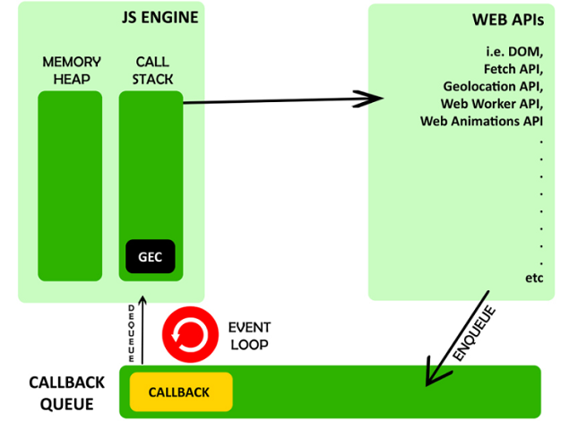

Asynchronous programming
1. Is javascript a synchronous or asynchronous programming language?
Javascript is the synchronous single-threaded language but with the help of event-loop and promises, JavaScript is used to do asynchronous programming.

Stop changing Background